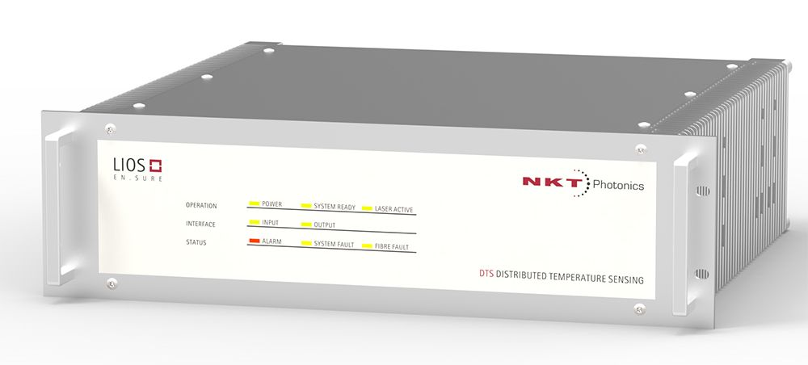
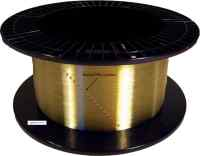

Where to Buy Fiber-optic Sensors and Related Equipment
Definition: optical sensors based on fiber devices
See also our encyclopedia article on fiber-optic sensors!
Related products: optical sensors, optical sensing instruments
See also the white papers on Small-Diameter Thin FBGs Ideally Suited for Embedded Sensing in Composites and Technologies for high temperature fibre Bragg gratings from Technica Optical Components!
34 suppliers for fiber-optic sensors and related equipment are listed in the RP Photonics Buyer's Guide. Both manufacturers and distributors can be registered.
| Suppliers with Ad Package | |
|---|---|
| Company | Product Description |
 Blokken 84 3460 Birkerød Denmark Quality: ISO 9000:2015 www.nktphotonics.com Social: Facebook, LinkedIn, Twitter, YouTube Tel.: +45 4348 39 00 Fax: +45 4348 39 01 |  With the LIOS Sensing product line, NKT Photonics is the market leader in distributed optical sensing of temperature and strain for security, safety and fire detection. Backed by more than 20 years of experience and thousands of systems in the field worldwide, we deliver LIOS monitoring solutions with unrivaled quality and performance. Our LIOS distributed temperature and strain sensing solutions give you a quick and easy overview of the status of your installation. We use passive optical fibers as distributed sensors, they are immune to vibration, electromagnetic noise, dust, cryogenic temperatures, and moisture. You get continuous and accurate monitoring of temperature and strain over long distances or across large surfaces – at the speed of light! It is highly reliable too, offering you a Mean Time Between Failure of above 45 years. See us at Laser World of Photonics China 2019 in Shanghai, March 20–22 (booth W2.2436)! |
 Fiber technology to sense the world. Technica Optical Components, LLC 3657 Peachtree Rd NE Suite 10A Atlanta, GA 30319 United States Quality: ISO 9001:2008 |  Premium quality fiber Bragg grating sensors and FBG array sensors in acrylate, polyimide, and gold coated fibers, specialized polyimide-coated sensors to 300 °C, high-T FBG sensors to 1,000 °C, radiation hard/proof sensors, bio-chem tilted FBG sensors and ultra-thin FBG sensors and arrays. We produce GFRP FBG cable sensors for embedding into concrete and other materials, Zeus PEEK FBG cable sensors for monitoring in transformers and chemically active environments, and vibration-sensitive cable sensors for security. |
| Your products are not listed here? Get an ad package! | |
| All Suppliers | |
|---|---|
| From your country: | |
3F, No 28, LN 60 WuenHu St, NeiHu Dist Taipei 114 China | |
| From Asia: | |
Unit G, 9/F, Block 3, Golden Dragon Industrial Centre, No. 172–180 Tai Lin Pai Road, Kwai Chung, N.T. Hong Kong | |
Room 416 HANSIN S-MECA 1359 Gwanpyeong-dong, Yuseong-gu, Daejeon Korea 305–509 | |
26–55 Gajeongbuk-ro Yuseong-gu, Dae-Jeon Korea | |
| Outside Asia: | |
Acrolite Fiber Optic Lighting and Sensing PO Box 1010 Elbridge, New York 13060 United States | |
Advanced Optical Solutions GmbH Ammonstrasse 35 01067 Dresden Germany | |
Herrenberger Str. 130 71034 Böblingen Germany | www.apsensing.com Tel.: +49 7031 3 09 66 10 |
370 Campus Dr. Suite 105 Somerset, NJ 08873 United States | |
Unit G17 111 Power Road London W4 5PY United Kingdom | |
26 Chapin Road Pine Brook, NJ 07058 United States | |
3325 North Service Road Unit 109 Burlington, Ontario L7N 3G2 Canada | |
Sales Office Ernst-Lau-Straße 8 12489 Berlin Germany | |
Podraga street 2, Riga, LV-1007 Latvia | |
4423 Fortran Court, Ste. 111 San Jose, CA 95134 United States | |
Bornheimer Straße 4 09648 Mittweida Germany | |
Thalkirchner Str. 210 81371 München Germany | |
 Rua Vasconcelos Costa, 277 4470–640 Maia Portugal | |
 21 rue de Broglie 22300 Lannion France | |
Corporate Headquarters 400 boul. Montpellier Montreal, Quebec H4N 2G7 Canada | |
Schanzenstr. 39 Building D9-D13 51063 Köln Germany | |
301 1st Street, SW, Suite 200 Roanoke, VA 24011 United States | lunainc.com Tel.: +1 540 961 5190 |
1852 Century Place NE Atlanta, GA 30345 United States | |
325 Washington Avenue Extension Albany, NY 12205 United States | |
Blokken 84 3460 Birkerød Denmark Quality: ISO 9000:2015 www.nktphotonics.com Social: Facebook, LinkedIn, Twitter, YouTube Tel.: +45 4348 39 00 Fax: +45 4348 39 01 | With the LIOS Sensing product line, NKT Photonics is the market leader in distributed optical sensing of temperature and strain for security, safety and fire detection. Backed by more than 20 years of experience and thousands of systems in the field worldwide, we deliver LIOS monitoring solutions with unrivaled quality and performance. Our LIOS distributed temperature and strain sensing solutions give you a quick and easy overview of the status of your installation. We use passive optical fibers as distributed sensors, they are immune to vibration, electromagnetic noise, dust, cryogenic temperatures, and moisture. You get continuous and accurate monitoring of temperature and strain over long distances or across large surfaces – at the speed of light! It is highly reliable too, offering you a Mean Time Between Failure of above 45 years. |
830 Douglas Ave. Dunedin, FL 34698 United States | |
(a division of Opsens Inc.) 319, Franquet Street, Suite 110 Quebec, Quebec G1P 4R4 Canada | |
Pohlandstraße 17 01309 Dresden Germany | |
PO Box 751 S. Freeport, ME 04078 United States | |
46155 Five Mile Road Plymouth, MI 48170 United States | |
2464 Massachusetts Ave, Suite 220 Cambridge MA 02140 United States | |
901 S Mopac Expressway Barton Oaks Plaza Three, Ste 115 Austin, TX 78746 United States | |
Spectrum House Brants Bridge Bracknell RG12 9BG United Kingdom | |
Fiber technology to sense the world. Technica Optical Components, LLC 3657 Peachtree Rd NE Suite 10A Atlanta, GA 30319 United States Quality: ISO 9001:2008 | Premium quality fiber Bragg grating sensors and FBG array sensors in acrylate, polyimide, and gold coated fibers, specialized polyimide-coated sensors to 300 °C, high-T FBG sensors to 1,000 °C, radiation hard/proof sensors, bio-chem tilted FBG sensors and ultra-thin FBG sensors and arrays. We produce GFRP FBG cable sensors for embedding into concrete and other materials, Zeus PEEK FBG cable sensors for monitoring in transformers and chemically active environments, and vibration-sensitive cable sensors for security. |
Pyrietstraat 2 1812 SC Alkmaar Netherlands | www.technobis.com Tel.: +31 72 302 0040 |
Click on a company entry to mark it. Product entries of suppliers having an ad package are displayed with a logo, product description and product image. | |
Users: if any displayed information is incorrect (e.g., a listed supplier does not offer such products) or legally problematic, please notify RP Photonics so that the problem can be solved.
Suppliers: you can report modified data using a form, which is provided via the button "Edit profile data" on your company profile page. You can obtain ad package for getting a much improved visibility and many more leads.
If you are a supplier and want to be listed, please use the registration form.
An already registered supplier can use a customized form to report the full list of offered photonics products. That form is reachable with a link at the bottom of the supplier's profile page.
Anyone, not only suppliers themselves, can report additional suppliers. If possible, please provide a web address showing that this supplier indeed offers such products.
If you like this buyer's guide, share it with your friends and colleagues, e.g. via social media: